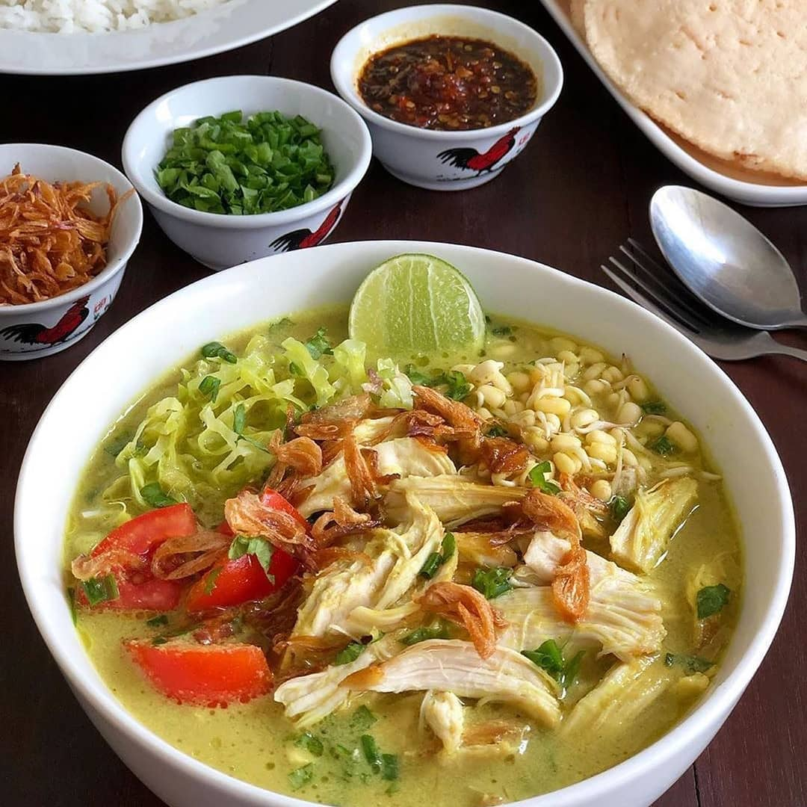

Resep Soto Ayam

Berikut adalah resep soto ayam, salah satu masakan tradisional Indonesia yang lezat:
Bahan - Bahan :
- 1 ekor ayam, potong menjadi bagian-bagian
- 2 liter air
- 2 batang serai, memarkan
- 4 daun salam
- 4 cm lengkuas, memarkan
- 4 lembar daun jeruk purut
- Garam secukupnya
Bumbu Halus :
- 6 bawang merah
- 4 siung bawang putih
- 3 kemiri, sangrai
- 2 cm jahe
- 2 cm kunyit, bakar
- 1/2 sdt merica
Bahan Pelengkap :
- 200 gram tauge
- 200 gram mi bihun, rebus
- 4 butir telur, rebus dan potong menjadi dua
- Bawang merah goreng
- Daun seledri, iris halus
- Jeruk nipis, iris menjadi beberapa bagian
- Sambal
Cara Membuat Nasi Goreng :
- Membuat Kaldu:
- Didihkan air dalam panci besar
- Masukkan potongan ayam, serai, daun salam, lengkuas, daun jeruk purut, dan garam
- Biarkan ayam matang dan kaldu mendidih dengan api sedang hingga aroma harum muncul
- Membuat Bumbu Halus:
- Haluskan semua bahan bumbu halus menggunakan blender atau ulekan
- Memasak Soto:
- Panaskan sedikit minyak dalam wajan dan tumis bumbu halus hingga harum
- Tambahkan bumbu yang telah ditumis ke dalam kaldu ayam yang
sudah matang. Aduk rata dan biarkan mendidih
- Koreksi rasa dengan menambahkan garam jika diperlukan
- Menyajikan Soto:
- Siapkan mangkuk besar, letakkan mi bihun rebus, tauge,
potongan telur rebus, dan potongan ayam
- Siram dengan kaldu soto panas
- Hiasi dengan bawang merah goreng, daun seledri, dan irisan jeruk nipis
- Sajikan soto ayam dengan sambal sebagai pelengkap
Selamat menikmati soto ayam yang lezat! Anda dapat menyesuaikan bumbu dan
pelengkap sesuai dengan selera Anda.